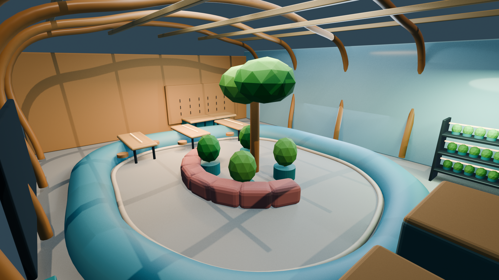
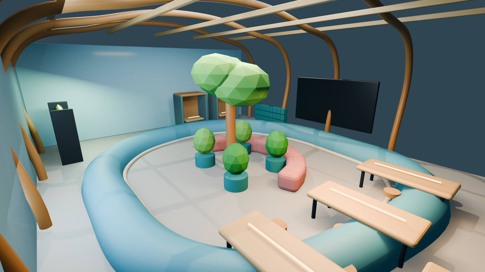
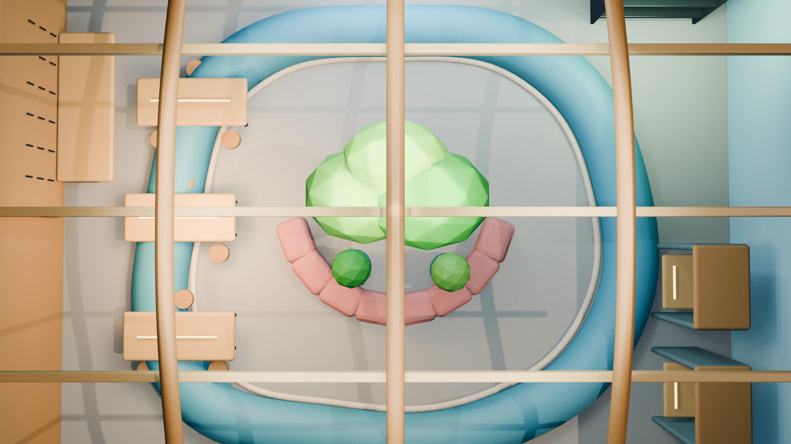
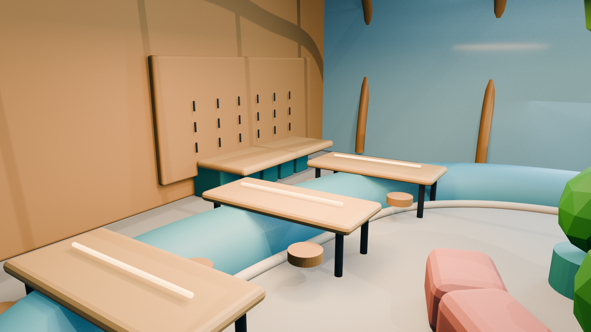
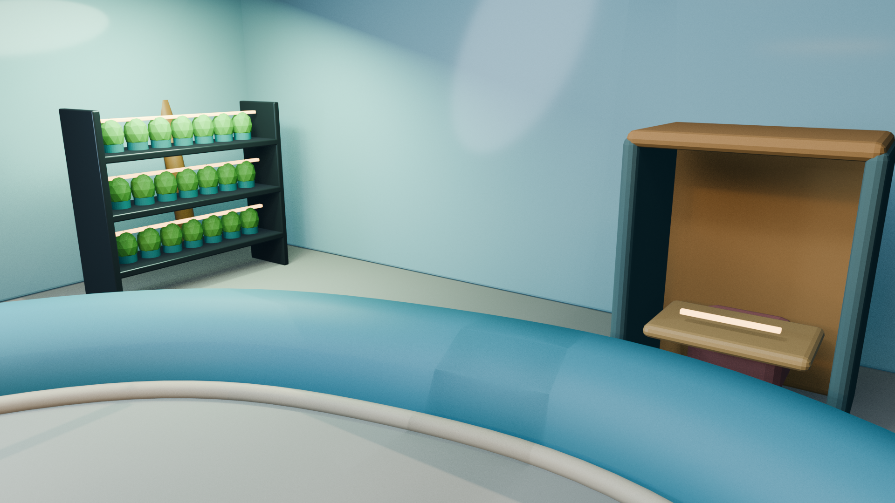
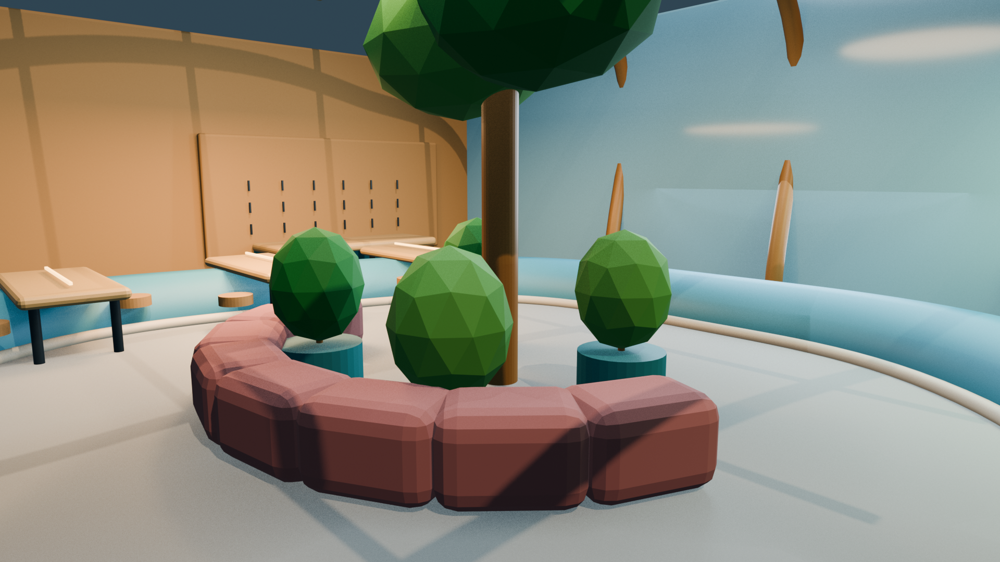

03 · 3D environment design
The Canopy
Loop
A future communal environment that brings making, repair, rest, and urban growing together beneath one continuous sculptural canopy.

One loop, many rhythms.
The Canopy Loop imagines a shared civic space where productive and restorative activities overlap. A flowing roof organizes distinct zones while preserving long views and a sense of movement through the project.
The design was developed through written prompts, spatial studies, and Blender modeling. Multiple camera angles tested circulation, program visibility, and whether the environment felt coherent at both the architectural and human scale.





Walk through the full process
Concept, prompts, views, and final environment.
Open process book ↗Concept, prompts, views, and final environment.